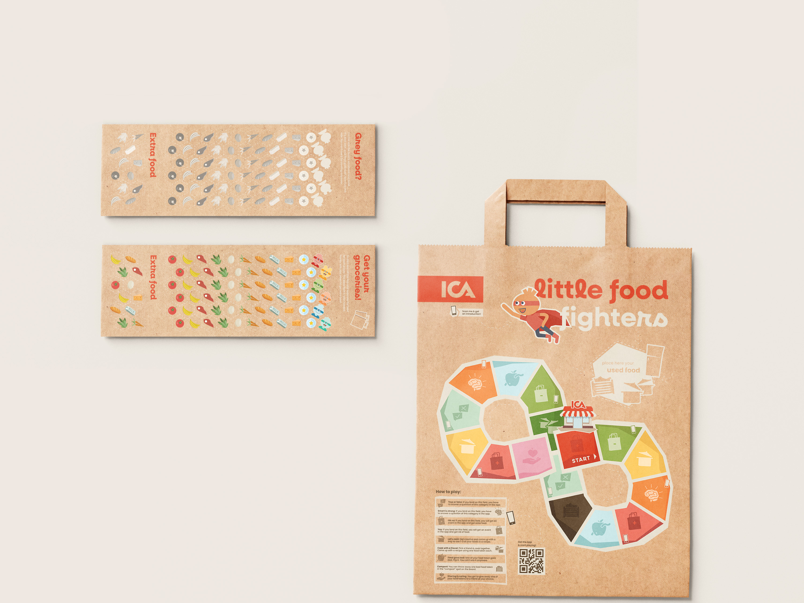
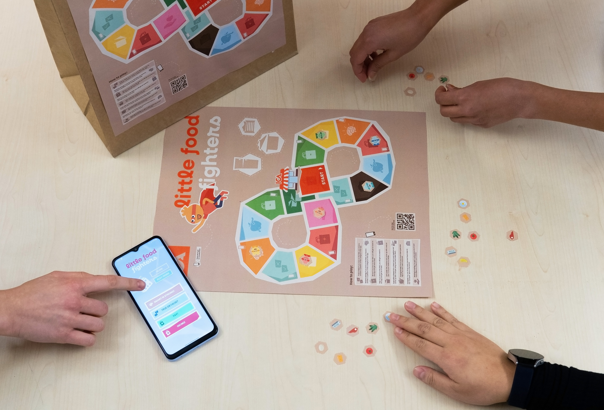
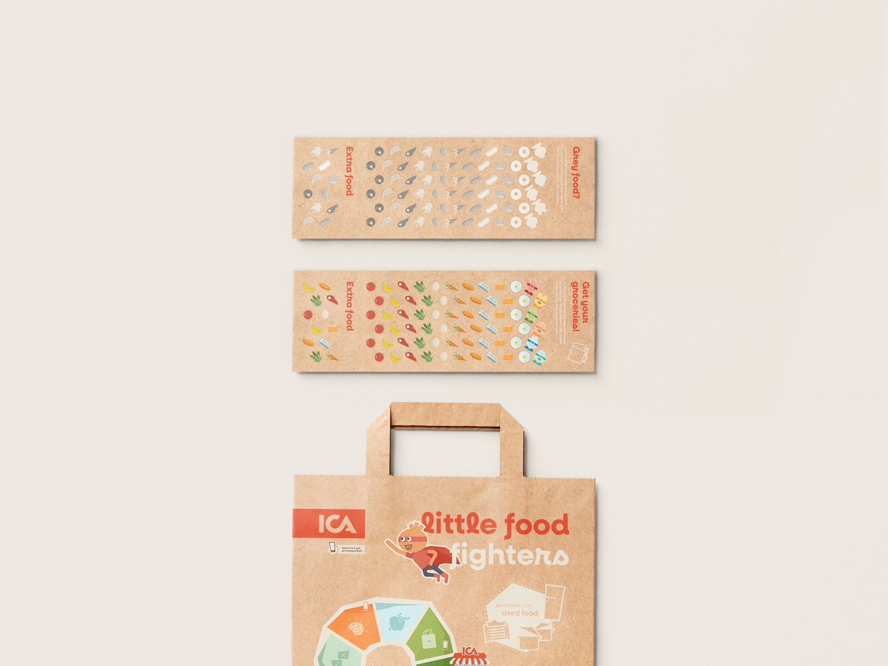
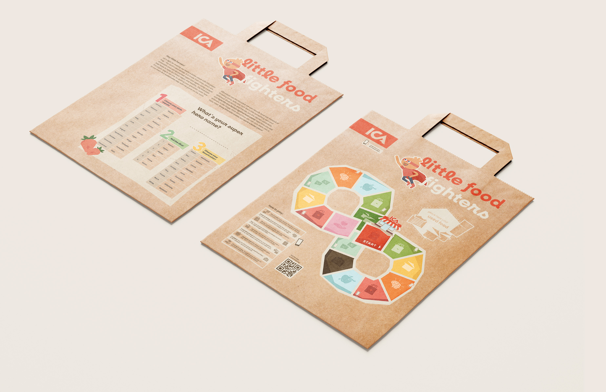

A printed board game educating kids about food waste. It comes directly with the grocery bag, extended with an AR companion app.
One third of all food produced globally is wasted, and changing that starts at home. The challenge was to design a sustainability intervention for families that did not feel like a lecture, reaching kids through play. Crucially, the game itself should not require any resources beyond what already exists.

We researched the scale and causes of food waste and studied how games successfully teach sustainability to younger audiences. A key insight: kids engage best through concrete cause-and-effect, everyday tasks, and collaboration.

We identified the everyday moments where kids can actually help avoid food waste and built the game around those. Core mechanics: cooperative play, shared tasks including donating food to players in need, and a grocery bag format that puts the game directly in families' hands. Sustainability is not explained, it is played.

Food characters were illustrated as colorful, gender and skin-tone neutral figures to reflect diversity. The print layout was designed for standard ICA grocery bag packaging. An AR companion app extends the game into the digital space, bringing characters to life and delivering varied tasks.

The game was playtested with kids aged 7 to 10 from our personal circle. Observations focused on engagement, rule clarity, and whether the sustainability message landed naturally. The AR feature generated immediate excitement and became a strong motivator for repeat play.

Little Food Fighters is a cooperative board game where players rescue expiring food from
the waste bin. It arrives printed on a grocery bag, no extra purchase or materials needed,
meeting families at the moment food decisions are made.
The project was met with enthusiasm by faculty, who saw SDG 12 addressed in a concrete and
age-appropriate way. The concept was well received to the point where instructors expressed
wanting to see it available in actual supermarkets.



.png)